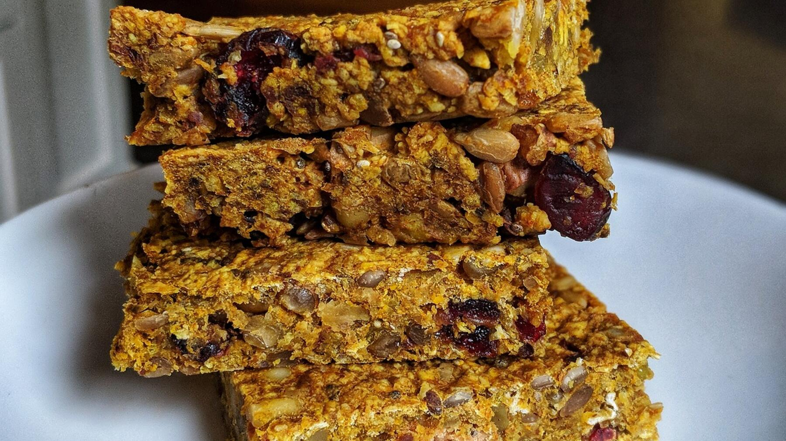

Zurück zur Übersicht
Müsliriegel
Haferflocken, Banane, Mandeln und Kokos, nur mit Honig gesüßt. Eine Portion entspricht einem Riegel.
- Zeit
- 25 Min.
- Schwierigkeit
- leicht
- Kategorie
- Süßgebäck
- Ernährung
- vegetarisch
Zutaten
Portionen
- 3Bananen
- 3 ELFlüssiger Honig
- ½Zitrone, davon der Saft
- 30 gLeinsamen, geschrotet
- 200 gHaferflocken
- 50 gGemahlene Mandeln
- 50 gKokosraspel
Zubereitung
- Die Bananen schälen und in einer Schüssel pürieren. Honig und Zitronensaft unterrühren.
- Leinsamen, Haferflocken, Mandeln und Kokosraspel dazugeben, alles gut vermischen und die Masse 30 Minuten ruhen lassen.
- Den Backofen auf 175 °C Ober-/Unterhitze vorheizen und ein Blech mit Backpapier belegen. Die Masse dünn darauf verstreichen und etwa 20 Minuten backen.
- Aus dem Ofen nehmen, noch warm in Riegel schneiden und auskühlen lassen.
Hinweis: Die 25 Minuten gelten ohne die 30 Minuten Ruhezeit.